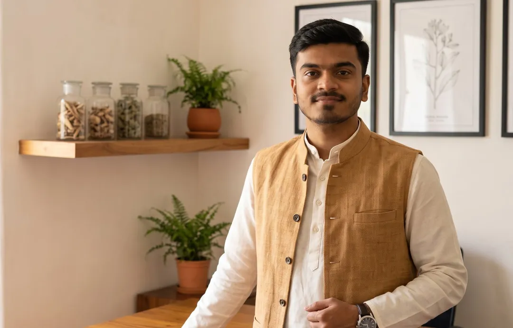

Best Panchakarma for patients from Uttar Pradesh
Eastern Uttar Pradesh and Bihar share more than a border. Ballia, Ghazipur, Deoria and Kushinagar speak the same Bhojpuri as Buxar, Ara and Gopalganj, eat the same sattu and litti, and send their children to the same colleges. So it is natural that some families in UP look east to Patna when they plan medical care, including Panchakarma.
To be clear: Sabka Ved Wellness is in Patna, near Bajrang Puri, Bihar. We have no clinic in Uttar Pradesh. This page explains how to judge any Panchakarma programme, how patients from different parts of UP usually plan a visit to Patna, and what to expect when they arrive.
Searching for the best Panchakarma for Uttar Pradesh patients? Judge the programme, not the label
Uttar Pradesh is home to some of India's most respected Ayurvedic institutions, including the Faculty of Ayurveda at Banaras Hindu University in Varanasi. Good Panchakarma is available in many places, and the right choice depends on what you need and what is practical for your family. Wherever you go, the classical standard is the same.
Charaka Samhita sets out the five actions of Panchakarma: vamana (emesis), virechana (purgation), anuvasana basti (oil enema), niruha basti (decoction enema) and nasya (nasal therapy). Sushruta Samhita, rooted in the surgical tradition that later Indian scholarship associates with Kashi, adds raktamokshana (bloodletting). Vagbhata's Ashtanga Hridaya, around the 7th century CE, gives the sequence still taught today: preparation (purva karma), main cleansing (pradhana karma) and recovery (paschat karma).
From those texts, a fair checklist follows:
- Doctor assessment before every programme. A BAMS doctor examines you and decides whether cleansing is right now.
- Individual planning. Procedures and duration fit your body, digestion, age and season.
- Classical sequence. Preparation and recovery are not skipped.
- Honest screening. Contraindications and current medicines are taken seriously.
- Clear explanation. You know what the programme includes, what you will eat and who will follow up.
How Sabka Ved Wellness meets that standard
Every programme at our Patna centre is planned by Dr. Aditya Kunal, BAMS, who has more than five years of clinical practice. His particular focus is gut and metabolic health: acidity, bloating, irregular bowels, weight and metabolic concerns, and the tiredness that often comes with them. Ayurveda puts agni, the digestive and metabolic fire, at the centre of health, and much of the planning is about protecting and restoring it.
Main cleansing procedures are done under his supervision. If a procedure is unsuitable for you at this time, you are told so plainly. Once a programme is advised, its procedures, number of days and aftercare are explained before you commit. Many people are advised a much shorter course than they expected; some are advised that they do not need Panchakarma at all.
Planning from different parts of Uttar Pradesh
Eastern UP: Ballia, Ghazipur, Deoria, Kushinagar, Mau
For many families in these districts, Patna is closer than Lucknow. Road and rail links run across the Ganga and Ghaghra into Bihar, and many people already have relatives in Patna. A consultation can be done online or in person, and a programme can be planned around a stay with family.
Varanasi, Gorakhpur and Prayagraj
These cities have direct train connections to Patna, and Varanasi also has the Lal Bahadur Shastri airport with flights to many cities. Because good Ayurvedic care is also available locally, we encourage you to compare options using the checklist above. If Patna suits you, an online consultation first saves an unnecessary journey.
Lucknow, Kanpur and western UP
From further west, the trip to Patna is longer, usually by train or flight. For you, the case for an online consultation first is even stronger: confirm suitability and plan the days before you book tickets.
Seasons in the Gangetic plain and the timing of cleansing
UP and Bihar share the same Gangetic climate: dense winter fog, a hot dry summer, a long humid monsoon and a mild, clear autumn. The texts match cleansing to these shifts. Vamana is traditionally planned for spring, when kapha built up in winter starts to melt. Virechana suits sharad, the clear, warm weeks after the rains, when pitta accumulated during the monsoon is said to flare. Basti is linked with the rainy season, when vata is disturbed. A doctor may adjust these rules for urgent needs, but timing is one reason the best month for your trip may not be the first free week on your calendar.
The visit, step by step
- Online consultation. Share reports, medicines and concerns. The doctor takes a full history and gives a provisional plan.
- Home preparation. Where suitable, diet changes and digestive preparation (deepana and pachana) begin at home.
- Arrival in Patna. In-person examination, including pulse and abdomen, confirms the plan.
- Preparation days. Snehapana (oleation with medicated ghee), abhyanga and swedana as advised.
- Main procedure. Under supervision, with the doctor watching your response.
- Early recovery in Patna. The graded diet begins. This is not the day to travel home.
- Home. You complete the diet with written guidance and follow up online.
Why you should not rush the journey home
After vamana or virechana, the body is tired and digestion is delicate. The texts compare the digestive fire at this stage to a small flame that has to be fed with dry grass before logs, which is why the graded diet starts with thin rice gruel. A long bus or train journey on the same day, with station food and broken sleep, is exactly what the recovery phase is meant to avoid. Plan to stay in Patna for the early recovery days.
Food after Panchakarma, the UP way
The good news is that a typical UP kitchen is well suited to recovery food. Thin rice kanji, moong dal khichdi with a little ghee, lauki and tori sabzi, light dal and soft rotis later on are all part of the graded diet. What needs patience is the return to puri, kachori, heavy paneer, rich mutton, pickles, very spicy chaat and sweets from the halwai. The doctor will tell you when each can return. Festivals and weddings are a common reason patients slip, so time your programme with the family calendar in mind.
What a Panchakarma programme can include
People are often surprised by how varied programmes are. The table below shows the building blocks a doctor chooses from. Not every patient needs every block, and many need only two or three.
| Phase | Examples | Purpose in classical terms |
|---|---|---|
| Purva karma (preparation) | Deepana and pachana, snehapana, abhyanga, swedana | Kindle digestion, loosen and mobilise doshas toward the gut |
| Pradhana karma (main) | Vamana, virechana, basti, nasya | Remove aggravated doshas by the nearest route |
| External therapies | Shirodhara, kati basti, pizhichil, kizhi, udvartana | Local or calming support, used alone or with cleansing |
| Paschat karma (recovery) | Samsarjana krama, rasayana, routine and yoga | Rebuild digestion and strength, protect the result |
A short visit from eastern UP for a few days of kati basti and abhyanga is a very different trip from a classical virechana programme with a week of preparation. Knowing which you need before you travel is the whole point of consulting first.
Questions UP families often ask
Why not simply go to a large hospital?
Large Ayurvedic hospitals and college hospitals do valuable work, and for some people they are the right choice. What matters is the same checklist: who assesses you, how individually your programme is planned and how carefully recovery is handled. A smaller centre where the same doctor plans and supervises your whole programme suits many patients well.
Can elderly parents travel from UP for Panchakarma?
Often yes, with care. Older patients usually need gentler preparation, closer monitoring and sometimes milder procedures. Share their full medical history at the online consultation so the doctor can decide whether the trip is sensible and how the programme should be adjusted.
Is there anything I should start before the trip?
Only what the doctor advises. Do not begin fasting, purgatives or ghee at home on your own. Self-started preparation is a common reason programmes have to be paused.
Who should consult carefully before planning
- Pregnant women and those who may be pregnant
- People with heart disease, uncontrolled blood pressure or uncontrolled diabetes
- Anyone on blood thinners or several long-term medicines
- People recently recovered from surgery or serious illness
- The elderly and the very weak, and children
Never stop medicines prescribed by your other doctors in order to have Panchakarma. The programme is planned around your medicines.
What research can and cannot tell you
Panchakarma is backed by centuries of clinical tradition, but modern research is still limited. A 2009 observational study from Harvard's Osher Research Center followed 20 women through a five-day programme and reported improvements in health behaviours and some psychological measures, but no significant change in overall quality of life. A 2016 study in Scientific Reports found changes in blood metabolite profiles in healthy adults after a Panchakarma-based programme. These are useful early findings. They do not prove that Panchakarma cures any disease, and we do not claim it does.
Plan your consultation
If you are in Uttar Pradesh and considering Panchakarma in Patna, begin with a conversation. Book online at superprofile.bio/bookings/dradityakunal or request a slot on our appointment page. Bring your reports and medicine list, and we will tell you honestly whether the trip is worth making.
Sources
- Panchakarma, Central Council for Research in Ayurvedic Sciences (CCRAS)
- Conboy L et al. Ayurveda and Panchakarma: measuring the effects of a holistic health intervention. ScientificWorldJournal, 2009
- Peterson CT et al. Altered metabolomic profiles following a Panchakarma-based Ayurvedic intervention in healthy subjects. Sci Rep, 2016
- National Commission for Indian System of Medicine (NCISM)
Therapies we offer


Preparation, therapy, recovery. In that order.


Read next
Pages that pair naturally with this one.


Questions people ask

No. The centre is in Patna, Bihar, near Bajrang Puri. Patients from Uttar Pradesh usually consult online first and then plan one trip to Patna.
For many families in eastern UP, Patna is a short and familiar journey, often with relatives in the city. Plan to stay in Patna for the treatment and early recovery days.
Yes. Dr. Aditya Kunal can take a full history online and give a provisional plan. The plan is confirmed with an in-person examination when you arrive.
It depends on your programme, from a few days for external therapies to one to three weeks for classical cleansing with preparation and recovery.
No one can honestly promise that. Panchakarma may support wellbeing alongside your regular treatment, and your prescribed medicines should continue unless your treating doctor changes them.